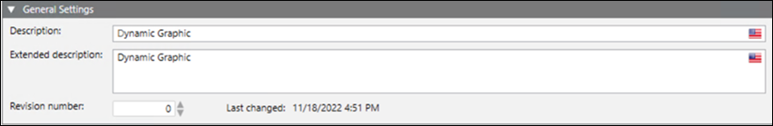

General Settings Expander
Allows you to do general settings or configuration of an incident template.

- Description: Contains the name of the incident template entered at the time of new template creation. Optionally the name can be changed in this field.
- Extended Description: Displays the additional information about the incident apart from the description. This information is shown to you during incident initiation, for example, specific instructions.
- Revision Number: Increase the number every time a new description is entered in an incident template or any incident template is revised.
- Last Changed: Displays the date and time of the last change in the incident template.